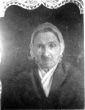

Foreword
All photos and cover designed by Sharon Ogzewalla

Deuteronomy 7:9
Know therefore that the Lord thy God, he is God, the faithful God, which keepeth covenant and mercy with them that love him and keep his commandments to a thousand generations.
This book was prompted because of the discovery of many stories that were recorded by Samuel Huddleston, about the generations of Huddleston’s who lived in Cambridge City, Indiana. I had not done any actual research on the Huddleston line, and when I finally connected with the autobiography of Samuel Brown Huddleston and learned that he had also written a series of articles from his civil war journal that appeared in the New Castle Courier in 1871, it set me to the task of transcribing and printing this information for future generations so it would no longer be obscured, buried in disjointed newspaper accounts.
I enjoyed organizing this book so much I wished that I had another to do, but I did not know what or how to approach another one. I had collected all the stories of the Huddleston family that Samuel had written about either from his research or from personal interviews. I kept them, thinking to maybe publish them as a Huddleston Family Reader, but it was little more than bits and pieces of people’s lives, and I wasn’t sure that anyone would be motivated to read just bits and pieces. But as the months wore on, this idea stayed in the back of my mind, and another thought began to form as a result of inspiration from our LDS leaders. I felt inspired by their challenge to learn from our ancestors and record their faith promoting experiences for the next generation, thus the impetus for another book to organize!
Why We Do Family History
Why not glean from these stories inspiration and faith that guided them through their trials and sorrow? This legacy of faith could be organized and brought forward for the next generation of family members who are searching for something to believe and guide them through their current trials. {++While speaking of ++}July 24th, {–is–} a day we set aside each year to celebrate our pioneer heritage, Elder Dallin Oaks helped me define the reason for sharing these stories of our ancestors.
“Now after all these studies and activities (24th of July Pioneer Day) it is appropriate to ask ourselves, “Therefore, what?” Are these pioneer celebrations academic, merely increasing our fund of experiences and knowledge? Or will they have a profound impact on how we live our lives? This question applies to all of us. As President Hinckley reminded us last April, “Whether you are among the posterity of the pioneers or whether you were baptized only yesterday, each is the beneficiary of their great undertaking.” All of us enjoy the blessings of their efforts, and all of us have the responsibilities which go with that heritage. “It is not enough to study or re-enact the accomplishments of our pioneers. We need to identify the great, eternal principles they applied to achieve all they achieved for our benefit and then apply those principles to the challenges of our day. In that way we honor their pioneering efforts, and we also reaffirm our heritage and strengthen its capacity to bless our own posterity and “those millions of our Heavenly Father’s children who have yet to hear and accept the gospel of Jesus Christ.” We are all pioneers in doing so.” {–Elder Dallin Oaks–} “Following the Pioneers,” Ensign 1997, pg 72.
Another man of faith, Elder Eyring, expressed a need to record these experiences for the next generation he shared his inspired thoughts at the November 2007 General Conference.
When our children were very small, I started to write down a few things about what happened every day. Let me tell you how that got started. I came home late from a Church assignment. It was after dark. My father-in-law, who lived near us, surprised me as I walked toward the front door of my house. He was carrying a load of pipes over his shoulder, walking very fast and dressed in his work clothes. I knew that he had been building a system to pump water from a stream below us up to our property.
He smiled, spoke softly, and then rushed past me into the darkness to go on with his work. I took a few steps toward the house, thinking of what he was doing for us, and just as I got to the door, I heard in my mind—not in my own voice—these words: “I’m not giving you these experiences for yourself. Write them down.”
I went inside. I didn’t go to bed. Although I was tired, I took out some paper and began to write. And as I did, I understood the message I had heard in my mind. I was supposed to record for my children to read, someday in the future, how I had seen the hand of God blessing our family. Grandpa didn’t have to do what he was doing for us. He could have had someone else do it or not have done it at all. But he was serving us, his family, in the way covenant disciples of Jesus Christ always do. I knew that was true. And so I wrote it down, so that my children could have the memory someday when they would need it.
I wrote down a few lines every day for years. I never missed a day no matter how tired I was or how early I would have to start the next day. Before I would write, I would ponder this question: ―Have I seen the hand of God reaching out to touch us or our children or our family today?‖ As I kept at it, something began to happen. As I would cast my mind over the day, I would see evidence of what God had done for one of us that I had not recognized in the busy moments of the day. As that happened, and it happened often, I realized that trying to remember had allowed God to show me what He had done.
More than gratitude began to grow in my heart. Testimony grew. I became ever more certain that our Heavenly Father hears and answers prayers. I felt more gratitude for the softening and refining that come because of the Atonement of the Savior Jesus Christ. And I grew more confident that the Holy Ghost can bring all things to our remembrance—even things we did not notice or pay attention to when they happened.
The years have gone by. My boys are grown men. And now and then one of them will surprise me by saying, “Dad, I was reading in my copy of the journal about when…” and then he will tell me about how reading of what happened long ago helped him notice something God had done in his day.
My point is to urge you to find ways to recognize and remember God’s kindness. It will build our testimonies. You may not keep a journal. You may not share whatever record you keep with those you love and serve. But you and they will be blessed as you remember what the Lord has done. You remember that song we sometimes sing: “Count your many blessings; name them one by one, And it will surprise you what the Lord has done.”[^2]
It won’t be easy to remember. Living as we do with a veil over our eyes, we cannot remember what it was like to be with our Heavenly Father and His Beloved Son, Jesus Christ, in the pre-mortal world; nor can we see with our physical eyes or with reason alone the hand of God in our lives. Seeing such things takes the Holy Ghost. And it is not easy to be worthy of the Holy Ghost’s companionship in a wicked world.
That is why forgetting God has been such a persistent problem among His children since the world began. Think of the times of Moses, when God provided manna and in miraculous and visible ways led and protected His children. Still, the prophet warned the people who had been so blessed, as prophets always have warned and always will: ―Take heed to thyself, and keep thy soul diligently, lest thou forget the things which thine eyes have seen, and lest they depart from thy heart all the days of thy life.[^3]
And the challenge to remember has always been the hardest for those who are blessed abundantly. Those who are faithful to God are protected and prospered. That comes as the result of serving God and keeping His commandments. But with those blessings comes the temptation to forget their source. It is easy to begin to feel the blessings were granted not by a loving God on whom we depend but by our own powers. The prophets have repeated this lament over and over:
“And thus we can behold how false, and also the unsteadiness of the hearts of the children of men; yea, we can see that the Lord in his great infinite goodness doth bless and prosper those who put their trust in him.
Yea, and we may see at the very time when he doth prosper his people, yea, in the increase of their fields, their flocks and their herds, and in gold, and in silver, and in all manner of precious things of every kind and art; sparing their lives, and delivering them out of the hands of their enemies; softening the hearts of their enemies that they should not declare wars against them; yea, and in fine, doing all things for the welfare and happiness of his people; yea, then is the time that they do harden their hearts, and do forget the Lord their God, and do trample under their feet the Holy One—yea, and this because of their ease, and their exceedingly great prosperity.”
And the prophet goes on to say: “Yea, how quick to be lifted up in pride; yea, how quick to boast, and do all manner of that which is iniquity; and how slow are they to remember the Lord their God, and to give ear unto his counsels, yea, how slow to walk in wisdom’s paths!”[^4]
Sadly, prosperity is not the only reason people forget God. It can also be hard to remember Him when our lives go badly. When we struggle, as so many do, in grinding poverty or when our enemies prevail against us or when sickness is not healed, the enemy of our souls can send his evil message that there is no God or that if He exists He does not care about us. Then it can be hard for the Holy Ghost to bring to our remembrance the lifetime of blessings the Lord has given us from our infancy and in the midst of our distress.
There is a simple cure for the terrible malady of forgetting God, His blessings, and His messages to us. Jesus Christ promised it to His disciples when He was about to be crucified, resurrected, and then taken away from them to ascend in glory to His Father. They were concerned to know how they would be able to endure when He was no longer with them.
Here is the promise. It was fulfilled for them then. It can be fulfilled for all of us now:
“These things have I spoken unto you, being yet present with you.
But the Comforter, which is the Holy Ghost, whom the Father will send in my name, he shall teach you all things, and bring all things to your remembrance, whatsoever I have said unto you.”[^5]
The key to the remembering that brings and maintains testimony is receiving the Holy Ghost as a companion. It is the Holy Ghost who helps us see what God has done for us. It is the Holy Ghost who can help those we serve to see what God has done for them.
Heavenly Father has given a simple pattern for us to receive the Holy Ghost not once but continually in the tumult of our daily lives. The pattern is repeated in the sacramental prayer: We promise that we will always remember the Savior. We promise to take His name upon us. We promise to keep His commandments. And we are promised that if we do that, we will have His Spirit to be with us.[^6] Those promises work together in a wonderful way to strengthen our testimonies and in time, through the Atonement, to change our natures as we keep our part of the promise.
It is the Holy Ghost who testifies that Jesus Christ is the Beloved Son of a Heavenly Father who loves us and wants us to have eternal life with Him in families. With even the beginning of that testimony, we feel a desire to serve Him and to keep His commandments. When we persist in doing that, we receive the gifts of the Holy Ghost to give us power in our service. We come to see the hand of God more clearly, so clearly that in time we not only remember Him, but we come to love Him and, through the power of the Atonement, become more like Him.
You might ask, “But how does this process get started in someone who knows nothing about God and claims no memory of spiritual experiences at all?” Everyone has had spiritual experiences that they may not have recognized. Every person, upon entering the world, is given the Spirit of Christ. How that spirit works is described in the book of
Moroni: “For behold, the Spirit of Christ is given to every man, that he may know good from evil; wherefore, I show unto you the way to judge; for every thing which inviteth to do good, and to persuade to believe in Christ, is sent forth by the power and gift of Christ; wherefore ye may know with a perfect knowledge it is of God.
But whatsoever thing persuadeth men to do evil, and believe not in Christ, and deny him, and serve not God, then ye may know with a perfect knowledge it is of the devil; for after this manner doth the devil work, for he persuadeth no man to do good, no, not one; neither do his angels; neither do they who subject themselves unto him. …
Wherefore, I beseech of you, brethren, that ye should search diligently in the light of Christ that ye may know good from evil; and if ye will lay hold upon every good thing, and condemn it not, ye certainly will be a child of Christ.”[^7]
The Spirit of Christ has already, from their childhood, invited them to do good and warned them against evil. They have memories of those experiences even if they have not recognized their source. They will remember the feeling of joy or sorrow when they are taught the truths of the gospel. And that memory of the Spirit of Christ will soften their hearts to allow the Holy Ghost to testify to them.
I testify to you that the warm feelings you have had as you have listened to truth being spoken are from the Holy Ghost. The Savior, who promised that the Holy Ghost would come, is the beloved, glorified Son of our Heavenly Father.
Tonight, and tomorrow night, you might pray and ponder, asking the questions: Did God send a message that was just for me? Did I see His hand in my life or the lives of my children? I will do that. And then I will find a way to preserve that memory for the day that I, and those that I love, will need to remember how much God loves us and how much we need Him. I testify that He loves us and blesses us, more than most of us have yet recognized. I know that is true, and it brings me joy to remember Him. In the name of Jesus Christ, amen.
Notes from Henry B. Eyring [^2]: Count Your Blessings,‖ Hymns, no. 241. [^3]: Deuteronomy 4:9. [^4]: Helaman 12:1– 2, 5. [^5]: John 14:25– 26. [^6]: See D&C 20:77, 79. [^7]: Moroni 7:16– 17, 19.